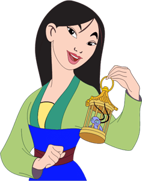
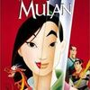

Mulan
Es una joven valiente y decidida que vive en una sociedad tradicional china. A diferencia de las expectativas sociales de la época, Mulán no encaja en el molde convencional de una mujer y lucha por encontrar su lugar en la sociedad. Cuando su país se ve amenazado por la guerra, Mulán toma una decisión audaz y se disfraza de hombre para unirse al ejército en lugar de su anciano padre.
Su personaje es conocido por su valentía, determinación y habilidades excepcionales en la lucha. La historia de Mulán es un relato inspirador de superación de adversidades y la importancia de ser fiel a uno mismo. A lo largo de la película, Mulán demuestra que el coraje y la inteligencia no tienen género y que una persona puede lograr cosas extraordinarias cuando sigue su corazón.
Peliculas
